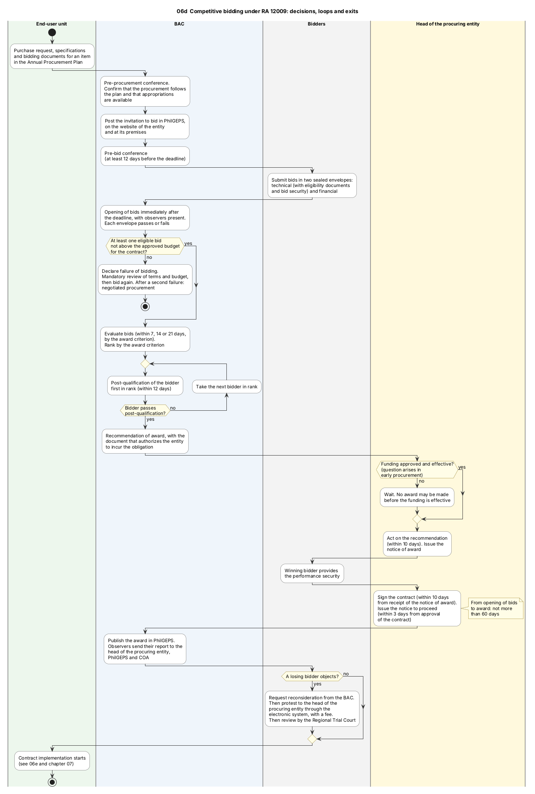

Diagram 06d · PlantUML activity diagram with lanes
Competitive bidding under RA 12009: decisions, loops and exits
Question: Where can a competitive bidding stop or return to an earlier step, and who decides at each of these points?
In: 06. Procurement

What the diagram shows
- Question: where can a competitive bidding stop or return to an earlier step, and who decides at each of these points?
- How to read it: one column (lane) = one actor. Diamond = decision. The sequence diagram 06b shows the same process as messages; this diagram shows the branches and loops.
- Why PlantUML: the process has loops (next bidder in rank) and exits (failure of bidding). Mermaid has no lane diagram with loops.
- Sources: the Implementing Rules of Republic Act No. 12009, text published on 10 February 2025 [IRR12009] ss.12, 43, 49, 51, 54, 58, 59, 60, 61, 62, 63, 64, 66, 67, 68, 83-85. Failure of bidding and what follows it [IRR12009 s.64, s.35.1]. The period for the notice to proceed is from the Act [RA12009 s.66].
- Limit: later amendments of the Rules are not in the text that I read. All days are calendar days.
Code

@startuml 06d_competitive_bidding_swimlane
' QUESTION THIS DIAGRAM ANSWERS: where can a competitive bidding stop or return to an earlier step, and who decides at each of these points?
' READING: one column (lane) = one actor. Diamond = decision. The sequence diagram 06b shows the same process as messages; this diagram shows the branches and loops.
' WHY PLANTUML: the process has loops (next bidder in rank) and exits (failure of bidding). Mermaid has no lane diagram with loops.
' SOURCES: the Implementing Rules of Republic Act No. 12009, text published on 10 February 2025 [IRR12009] ss.12, 43, 49, 51, 54, 58, 59, 60, 61, 62, 63, 64, 66, 67, 68, 83-85. Failure of bidding and what follows it [IRR12009 s.64, s.35.1]. The period for the notice to proceed is from the Act [RA12009 s.66].
' LIMIT: later amendments of the Rules are not in the text that I read. All days are calendar days.
title 06d Competitive bidding under RA 12009: decisions, loops and exits
skinparam shadowing false
skinparam defaultFontName SansSerif
skinparam defaultFontSize 12
skinparam ActivityBackgroundColor #FFFFFF
skinparam ActivityBorderColor #444444
skinparam ActivityDiamondBackgroundColor #FFFDE7
skinparam ActivityDiamondBorderColor #8A6D00
skinparam ArrowColor #333333
skinparam NoteBackgroundColor #FFFDE7
skinparam NoteBorderColor #8A6D00
skinparam SwimlaneBorderColor #777777
skinparam SwimlaneTitleFontStyle bold
|#EDF7ED|End-user unit|
start
:Purchase request, specifications
and bidding documents for an item
in the Annual Procurement Plan;
|#EEF4FB|BAC|
:Pre-procurement conference.
Confirm that the procurement follows
the plan and that appropriations
are available;
:Post the invitation to bid in PhilGEPS,
on the website of the entity
and at its premises;
:Pre-bid conference
(at least 12 days before the deadline);
|#F2F2F2|Bidders|
:Submit bids in two sealed envelopes:
technical (with eligibility documents
and bid security) and financial;
|#EEF4FB|BAC|
:Opening of bids immediately after
the deadline, with observers present.
Each envelope passes or fails;
if (At least one eligible bid\nnot above the approved budget\nfor the contract?) then (no)
:Declare failure of bidding.
Mandatory review of terms and budget,
then bid again. After a second failure:
negotiated procurement;
stop
else (yes)
endif
:Evaluate bids (within 7, 14 or 21 days,
by the award criterion).
Rank by the award criterion;
repeat
:Post-qualification of the bidder
first in rank (within 12 days);
backward :Take the next bidder in rank;
repeat while (Bidder passes\npost-qualification?) is (no) not (yes)
:Recommendation of award, with the
document that authorizes the entity
to incur the obligation;
|#FFF8DC|Head of the procuring entity|
if (Funding approved and effective?\n(question arises in\nearly procurement)) then (no)
:Wait. No award may be made
before the funding is effective;
else (yes)
endif
:Act on the recommendation
(within 10 days). Issue the
notice of award;
|#F2F2F2|Bidders|
:Winning bidder provides
the performance security;
|#FFF8DC|Head of the procuring entity|
:Sign the contract (within 10 days
from receipt of the notice of award).
Issue the notice to proceed
(within 3 days from approval
of the contract);
note right
From opening of bids
to award: not more
than 60 days
end note
|#EEF4FB|BAC|
:Publish the award in PhilGEPS.
Observers send their report to the
head of the procuring entity,
PhilGEPS and COA;
|#F2F2F2|Bidders|
if (A losing bidder objects?) then (yes)
:Request reconsideration from the BAC.
Then protest to the head of the
procuring entity through the
electronic system, with a fee.
Then review by the Regional Trial Court;
else (no)
endif
|#EDF7ED|End-user unit|
:Contract implementation starts
(see 06e and chapter 07);
stop
@enduml